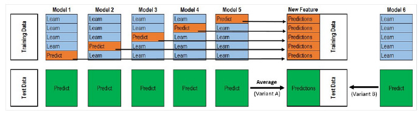
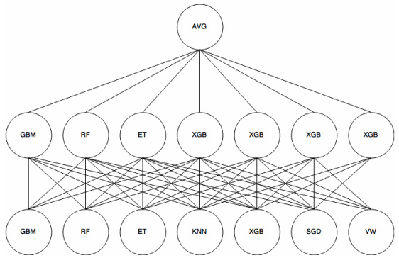
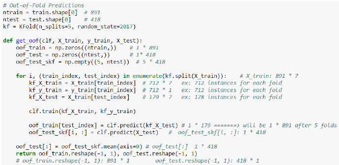

集成模型，即ensemble， 把不同的分类器组合在一起进行预测。
常见的有随机森林、装袋算法、提升算法，基本上是用分类回归树做基学习器，如500棵树组合成随机森林。
当然，也可以选择其他的算法做为基学习器，如knn，或者提升算法以随机森林作为基学习器，不过运算量太大，用普通笔记本电脑的伤不起啊，跑了两个小时，发现8G内存占满，还把C盘写满，还没运算完。
通常ensemble之后再ensemble，举个例子，就是把随机森林和提升算法的结果，再求个平均，或者再投票（即求众数，不同于求平均）。
看了经验帖发现，还有另外一种ensemble之后再ensemble的方法，叫做stack，貌似效果更好。
先介绍下为什么要ensemble之后再ensemble，即把多种算法预测的结果再组合起来进行预测，准确度会提升？
参考自：http://bit.ly/1GQtJDS ，需要翻墙，所以这里再记录下。
假设：我们已经训练好了3个两类别分类器，正确率均为70%。
对3个分类器的投票（类别0或1）有四种结果：
0.7 * 0.7 * 0.7 = 0.3429
0.7 * 0.7 * 0.3 + 0.7 * 0.3 * 0.7+ 0.3 * 0.7 * 0.7 = 0.4409
0.3 * 0.3 * 0.7 + 0.3 * 0.7 * 0.3 +0.7 * 0.3 * 0.3 = 0.189
0.3 * 0.3 * 0.3 = 0.027
我们能够看到，让三个正确率均为70%的分类器，投票选择类别0或者1，有约78%（0.3429 + 0.4409 = 0.7838）的正确率，正确率提升了8%，主要就在于约44%（0.4409）修正了错误。 这也是装袋算法的原理，构造很多个基分类器，让大家一起投票，选出正确的类别，结果单个分类效果都很差的分类器，最终的预测结果却很好。
其实，正确率的提升还和投票的分类器是否相关有关。
举例如下：真实的数列全是1
1111111100 = 80% accuracy 1111111100 = 80% accuracy 1011111100 = 70% accuracy.
组合平均后： 1111111100 = 80% accuracy
高度相关的分类器，都是擅长预测数据集的同一个部分，所以，即使再组合平均，提升不大。
现在我们看下高度不相关的分类器：
1111111100 = 80% accuracy 0111011101 = 70% accuracy 1000101111 = 60% accuracy
组合平均后： 1111111101 = 90% accuracy
高度不相关的分类器，擅长预测数据集的不同部分，所以，组合平均，提升较大。 这估计也是孟尝君广收各种门客，鸡鸣狗盗之徒，也起到了关键作用的类似道理。 产品多样化的优势。
有时候，加权投票效果优于简单投票，即体现专家（正确率高的模型）意见的重要性。 |Model| Public Accuracy Score| | —- | —- | | GradientBoostingMachine| 0.65057| |RandomForest Gini| 0.75107| |RandomForest Entropy| 0.75222| |ExtraTrees Entropy| 0.75524| |ExtraTrees Gini (Best) |0.75571| |Voting Ensemble (Democracy)| 0.75337| |Voting Ensemble (3*Best vs. Rest)| 0.75667|
投票和平均的区别:
投票是求众数，平均是求平均数，既然有加权投票，也有加权平均。平均通常可以降低过拟合。
秩平均（rank average）
平均的方法真多啊，一般的，加权的，现在又来个秩的，不过仔细一看，绝对实战得来的小技巧啊，指不定是将来的必杀绝技呢。
| Id | Prediction |
|---|---|
| 1 | 0.35000056 |
| 2 | 0.35000002 |
| 3 | 0.35000098 |
| 4 | 0.35000111 |
看到差异没？重点在最后两位数字。
另外一个需要平均的预测结果：
| Id | Prediction |
|---|---|
| 1 | 0.57 |
| 2 | 0.04 |
| 3 | 0.96 |
| 4 | 0.99 |
由于第一个预测结果的差异太小，需要用放大镜看啊，这两个平均后效果不明显。
怎么办呢？
求第一个预测结果中预测值的秩，求第二个预测结果中预测值的秩，然后求这些秩的平均值。
| Id | Rank | Prediction |
|---|---|---|
| 1 | 1 | 0.35000056 |
| 2 | 0 | 0.35000002 |
| 3 | 2 | 0.35000098 |
| 4 | 3 | 0.35000111 |
再把平均后的秩进行标准化到0与1之间，你得到了一个均衡的分布。 |Id|Prediction| | —- | —- | | 1|0.33| |2|0.0| 3|0.66| 4|1.0|
| Model | Public | Private |
|---|---|---|
| Vowpal Wabbit A | 0.60764 | 0.59962 |
| Vowpal Wabbit B | 0.60737 | 0.59957 |
| Vowpal Wabbit C | 0.60757 | 0.59954 |
| GLMNet | 0.60433 | 0.59665 |
| Average Bag | 0.60795 | 0.60031 |
| Rank average Bag | 0.61027 | 0.60187 |
看来秩平均是kaggle中的必备技巧啊。
和上面的加权平均组合起来，就是加权秩平均，呵呵。
汇总下
| id | method1_label | method2_label | method3_label | 投票 | 平均 | 秩平均 | 几何平均 |
|---|---|---|---|---|---|---|---|
| 1 | 1 | 2 | 2 | 2 | 1.67 | 0.25 | 1.59 |
| 2 | 0 | 0 | 0 | 0 | 0 | 0 | 0 |
| 3 | 9 | 6 | 9 | 9 | 8 | 1 | 7.86 |
| 4 | 9 | 2 | 2 | 2 | 4.3 | 0.5 | 3.3 |
| 5 | 3 | 3 | 3 | 3 | 3 | 0.75 | 3 |
stacked
参考：

整个过程很像 Cross Validation。
对于每一轮的 5-fold，Model 1都要做满5次的训练和预测。
首先将训练数据分为5份，接下来一共5个迭代，每次迭代时，将4份数据作为Training Set对每个 Base Model 进行训练，然后在剩下一份 Hold-out Set上进行预测。同时也要将其在测试数据上的预测保存下来。
这样，每个 Base Model在每次迭代时会对训练数据的其中1份做出预测，对测试数据的全部做出预测。5个迭代都完成以后我们就获得了一个训练数据行数 x Base Model数量的矩阵，这个矩阵接下来就作为第二层的Model的训练数据。当第二层的Model训练完以后，将之前保存的 Base Model 对测试数据的预测（因为每个 Base Model被训练了5次，对测试数据的全体做了5次预测，所以对这5次求一个平均值，从而得到一个形状与第二层训练数据相同的矩阵）拿出来让它进行预测，就得到最后的输出。
Titanic 栗子：
Train Data有890行。(请对应图中的上层部分）
每1次的fold，都会生成 713行小train， 178行小test。我们用Model 1来训练713行的小train，然后预测178行小test。预测的结果是长度为178的预测值。
这样的动作走5次！ 长度为178 的预测值X5=890预测值，刚好和Train data长度吻合。这个890预测值是Model 1产生的，我们先存着，因为，一会让它将是第二层模型的训练来源。
重点：这一步产生的预测值我们可以转成 890X 1（890行，1列），记作 P1(大写P)
接着说Test Data有418行。(请对应图中的下层部分，对对对，绿绿的那些框框）
每1次的fold，713行小train训练出来的Model 1要去预测我们全部的Test Data（全部！因为Test Data没有加入5-fold，所以每次都是全部！）。此时，Model 1的预测结果是长度为418的预测值。
这样的动作走5次！我们可以得到一个 5 X 418 的预测值矩阵。然后我们根据行来就平均值，最后得到一个 1 X 418 的平均预测值。
重点：这一步产生的预测值我们可以转成 418 X 1 （418行，1列），记作 p1 (小写p)
走到这里，你的第一层的Model 1完成了它的使命。
第一层还会有其他Model的，比如Model 2，同样的走一遍， 我们有可以得到 890 X 1 (P2) 和 418 X 1 (p2) 列预测值。
这样吧，假设你第一层有3个模型，这样你就会得到：
来自5-fold的预测值矩阵 890 X 3，（P1，P2， P3） 和 来自Test Data预测值矩阵 418 X 3， （p1, p2, p3）。
到第二层了………………
来自5-fold的预测值矩阵 890 X 3 作为你的Train Data，训练第二层的模型
来自Test Data预测值矩阵 418 X 3 就是你的Test Data，用训练好的模型来预测他们吧。

stack算法实施
在R中可以直接调用caretEnsemble包中的caretStack函数
python中貌似可以自己写

备注：转移自新浪博客，截至2021年11月，原阅读数270，评论0个。